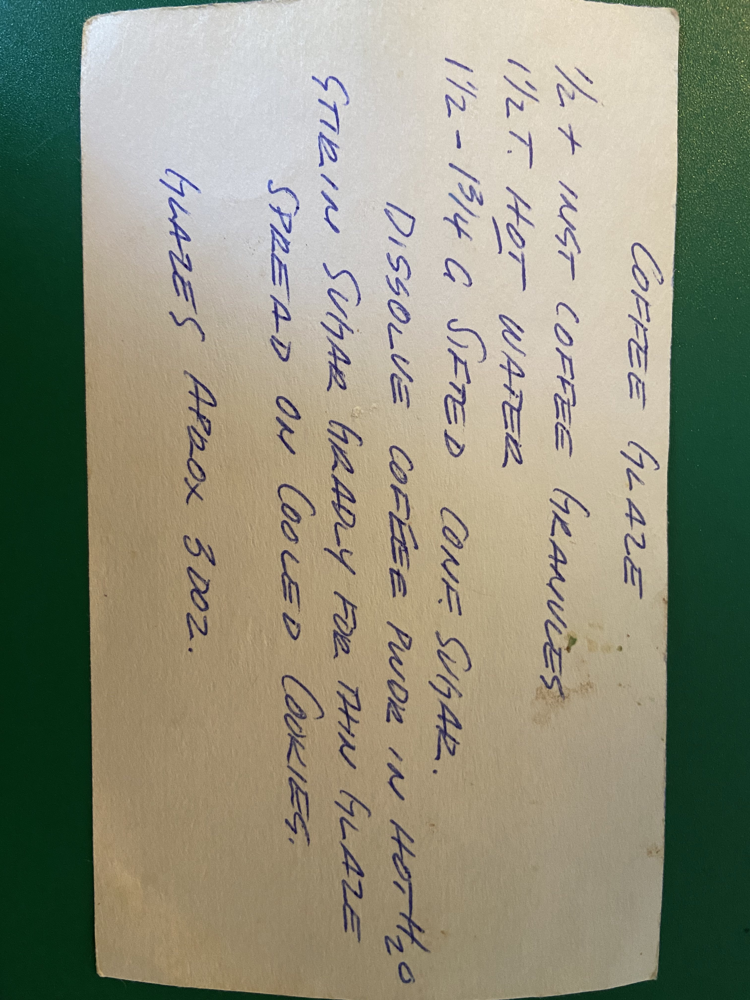
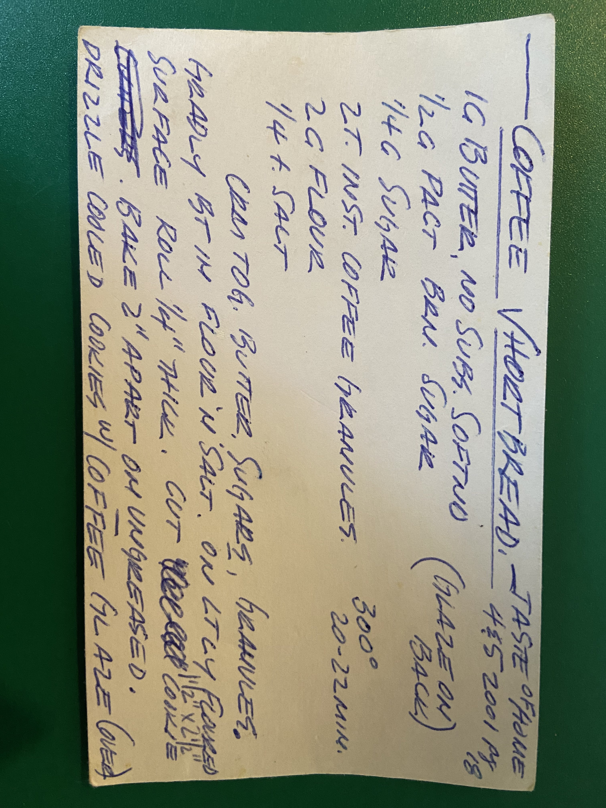

Coffee Shortbread


Description
They're sandwich cookies with a coffee flavored thing going on in the middle
Ingredients
Coffee Glaze
- 1/2 Tsp Instant Coffee
- 1 1/2 Tbsp Hot Water
- 1 1/2 Cups Sifted Confectioner's Sugar
Shortbread cookies
- 1 Cup Butter
- 1/2 cup Brown Sugar
- 1/4 cup sugar
- 2 Tbsp Instant Coffee
- 2 Cups Flour
- 1/4 Tsp Salt
Steps
Coffee Glaze
- Dissolve Coffee Powder in hot water
- Stir in sugar Gradually
Cookies
- Combine butter, brown sugar, instant coffee granules
- Gradually add in flour and salt
- Roll out dough to 1/4" thick on a lightly floured surface
- Make cookie shapes
- Bake cookies 2" apart on ungreased pan
- Drizzle Coffee Glaze onto cooled cookies